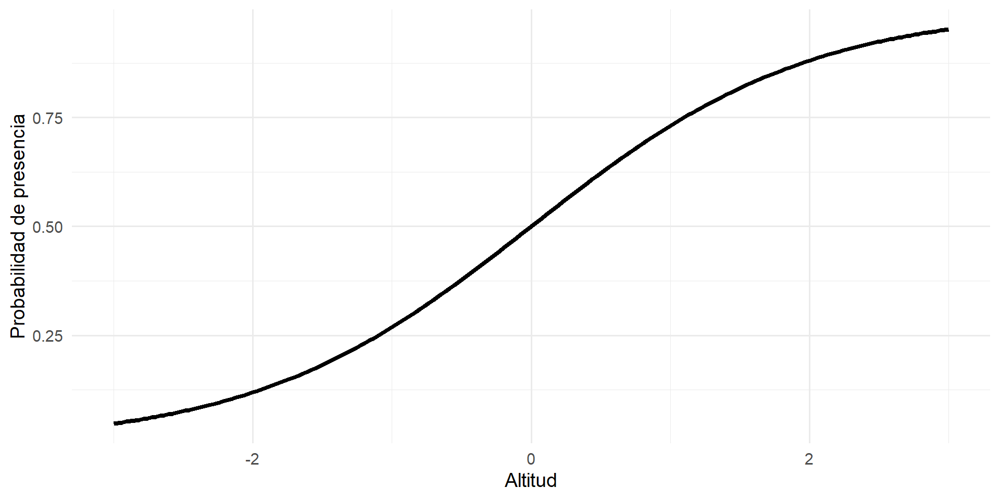

Cuando el análisis multivariado y los modelos lineales compiten: CCA vs Regresión Logística
Usando el dataset Dune
Autores
Rodrigo Basaldud
Lizbeth Artista
Seani Rodríguez
Junio 2026
Borrador de presentacion
Este es un primer borrador de la presentacion
La Regresion logistica es Aburrida
\[
logit(p) = X \underline{\beta}
\]
Y todavia falta hacerla Bayesiana
PCA en 5 minutos?
A Pepe le gustaria esto
O no?
Motivación: Restauración forestal en México
Supongamos que la Comisión Nacional Forestal (CONAFOR) desea identificar qué especies arbóreas tienen mayor probabilidad de establecerse en distintas regiones del país para apoyar diferentes programas de reforestación y restauración ecológica.
Se cuenta con información de cientos de sitios distribuidos en bosques templados del centro de México, donde se registró:
Altitud.
Precipitación anual.
Temperatura media.
Pendiente del terreno.
pH del suelo.
Además, para cada sitio se registró la presencia o ausencia de especies como:
Pinus montezumae
Pinus hartwegii
Quercus rugosa
Quercus laurina
Alnus acuminata
La pregunta de investigación
Antes de plantar árboles, surge una pregunta fundamental:
¿Qué especies tienen mayor probabilidad de sobrevivir y establecerse bajo las condiciones ambientales del sitio específico?
La intuición sugiere que se deben usar modelos que relacionen la presencia de cada especie con las variables ambientales, sin embargo existen dos enfoques.
Enfoque 1: Especie por especie
Un técnico forestal podría argumentar:
“Pinus hartwegii no responde al ambiente de la misma forma que Quercus rugosa. Cada especie debe estudiarse individualmente.”
Entonces se ajusta un modelo para cada especie:
Un modelo para Pinus montezumae.
Otro para Pinus hartwegii.
Otro para Quercus rugosa.
Etc.
Cada modelo selecciona las variables ambientales que mejor explican la presencia de esa especie.
Enfoque 2: Ecosistema como un todo
Un ecólogo de comunidades podría responder:
“Los bosques mexicanos son ecosistemas complejos. Las especies no aparecen de manera aislada, sino que coexisten y hay una relación de entre ellas.”
Por ejemplo:
Las especies de alta montaña tienden a aparecer juntas.
Las especies asociadas a ambientes húmedos suelen coexistir.
Los encinos y pinos responden simultáneamente a climas con mucha precipitación.
Desde esta perspectiva, se busca un modelo que logre capturar las relaciones entre las especies y su respuesta conjunta al ambiente.
El dilema
He aquí el dilema que motiva esta presentación:
Si el objetivo es predecir la presencia de especies arbóreas en los bosques mexicanos, ¿es mejor construir un modelo específico para cada especie o aprovechar la información compartida por toda la comunidad vegetal?
Esta discución fue inspirada por el articulo:
Guisan, A., Weiss, S.B. & Weiss, A.D. GLM versus CCA spatial modeling of plant species distribution. Plant Ecology 143, 107–122 (1999). https://doi.org/10.1023/A:1009841519580
Propuesta
Enfoque 1: Modelar cada especie de manera independiente mediante regresión logística.
Enfoque 2: Modelar simultáneamente toda la comunidad mediante análisis de correspondencias canónicas (CCA).
Objetivo:
Evaluar cuál de estas estrategias proporciona una mejor capacidad predictiva para la presencia de especies arbóreas en bosques templados mexicanos.
Una modelo conocido: Regresión Logística
Motivación vinculada con el ejemplo, teoría y ecuación de la regresión logística.
\[
logit(p) = X \underline{\beta}
\]
\[
p = \frac{1}{1 + e^{-X \underline{\beta}}}
\]
Grafica reg log

Análisis de correspondencias ... ¿canónicas?
Motivacion, teoria y ecuacion de la CCA, vinculada con el ejemplo.
Primero motivar PCA
Luego CA
CCA = PCA + CA?
Grafica CCA
Comparación de enfoques
Método
Ventajas
Desventajas
Regresión logística
Fácil interpretación de los efectos de cada variable, estimación de probabilidades.
Analiza una especie a la vez y no describe la comunidad completa.
CCA
Analiza comunidades completas y relaciona especies con cambios ambientales.
Interpretación más compleja y no estima probabilidades.
Ejemplo práctico: Dune
Usaremos el dataset Dune y Dune.env de la paquetería vegan, que contiene datos de abundancia de especies en 20 sitios, junto con variables ambientales como altitud, humedad y pH del suelo.
Ejemplo con el dataset Dune que contiene datos de abundancia de especies en 20 sitios.
library(vegan)data("dune.env")head(dune.env)
Prueba codigo animado 2
De la paquqteria vegan
Ejemplo con el dataset Dune que contiene datos de abundancia de especies en 20 sitios.
library(vegan)data("dune.env")head(dune.env)plot(dune.env$A1, dune.env$Moisture, xlab ="Altitud", ylab ="Humedad", main ="Relación entre Altitud y Humedad")